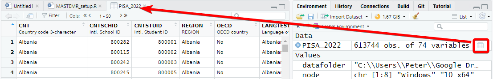

Now that we have loaded the student_data data set we can start to explore it.
You can check that the tables have loaded correctly by typing the object name and running the line (control|command ⌘ and Enter)
student_data
# A tibble: 200 × 36
Name StudentID DateOfBirth Gender Registration Country Programme
<chr> <chr> <dttm> <chr> <chr> <chr> <chr>
1 Quinn K… S100000 2000-04-08 00:00:00 Female Internation… China MA STEM …
2 Casey E… S100001 1979-04-14 00:00:00 Other Home UK MA STEM …
3 Jamie B… S100002 1984-04-12 00:00:00 Other Internation… Nigeria MA STEM …
4 Casey E… S100003 1986-04-12 00:00:00 Male Home UK MA Educa…
5 Morgan … S100004 1996-04-09 00:00:00 Female Internation… China MA Educa…
6 Avery T… S100005 1977-04-14 00:00:00 Other Home UK MA Educa…
7 Riley W… S100006 1980-04-13 00:00:00 Other Home UK MA Educa…
8 Casey K… S100007 1978-04-14 00:00:00 Female Home UK MA STEM …
9 Casey K… S100008 1978-04-14 00:00:00 Male Home UK MA STEM …
10 Riley W… S100009 1996-04-09 00:00:00 Other Home UK MA Educa…
11 Jordan … S100010 2004-04-07 00:00:00 Female Internation… China MA Educa…
12 Sam Tho… S100011 1981-04-13 00:00:00 Female Internation… China MA STEM …
13 Charlie… S100012 1981-04-13 00:00:00 Male Internation… China MA STEM …
14 Riley B… S100013 1984-04-12 00:00:00 Female Internation… China MA Educa…
15 Morgan … S100014 2000-04-08 00:00:00 Other Home UK MA Educa…
16 Drew Th… S100015 2000-04-08 00:00:00 Other Internation… India MA STEM …
17 Avery E… S100016 1986-04-12 00:00:00 Other Internation… China MA STEM …
18 Alex Th… S100017 1988-04-11 00:00:00 Other Home UK MA Educa…
19 Quinn C… S100018 1999-04-09 00:00:00 Female Home UK MA Educa…
20 Sam Bro… S100019 2003-04-08 00:00:00 Other Home UK MA Educa…
21 Drew Pa… S100020 2003-04-08 00:00:00 Other Internation… China MA Educa…
22 Quinn B… S100021 1998-04-09 00:00:00 Other Home UK MA Educa…
23 Sam Pat… S100022 1987-04-12 00:00:00 Male Internation… China MA STEM …
24 Morgan … S100023 1988-04-11 00:00:00 Other Home UK MA Educa…
25 Morgan … S100024 1997-04-09 00:00:00 Female Home UK MA Educa…
26 Riley D… S100025 1978-04-14 00:00:00 Male Home UK MA Educa…
27 Casey P… S100026 2005-04-07 00:00:00 Other Internation… Nigeria MA Educa…
28 Avery P… S100027 1977-04-14 00:00:00 Male Internation… India MA STEM …
29 Drew Ta… S100028 1994-04-10 00:00:00 Female Internation… China MA Educa…
30 Charlie… S100029 1978-04-14 00:00:00 Female Home UK MA Educa…
31 Morgan … S100030 1986-04-12 00:00:00 Female Home UK MA Educa…
32 Drew Pa… S100031 1976-04-14 00:00:00 Other Internation… China MA Educa…
33 Quinn B… S100032 1983-04-13 00:00:00 Other Home UK MA Educa…
34 Alex Da… S100033 1999-04-09 00:00:00 Other Home UK MA Educa…
35 Avery J… S100034 1982-04-13 00:00:00 Male Home UK MA STEM …
36 Morgan … S100035 1987-04-12 00:00:00 Female Home UK MA Educa…
37 Riley E… S100036 1979-04-14 00:00:00 Female Home UK MA Educa…
38 Morgan … S100037 1994-04-10 00:00:00 Other Internation… China MA Educa…
39 Sam Dav… S100038 1978-04-14 00:00:00 Other Internation… China MA Educa…
40 Sam Khan S100039 1992-04-10 00:00:00 Other Home UK MA STEM …
41 Avery K… S100040 2000-04-08 00:00:00 Male Internation… China MA Educa…
42 Avery J… S100041 1992-04-10 00:00:00 Male Home UK MA Educa…
43 Riley E… S100042 1991-04-11 00:00:00 Female Home UK MA Educa…
44 Taylor … S100043 2000-04-08 00:00:00 Male Home UK MA STEM …
45 Jamie E… S100044 2003-04-08 00:00:00 Other Home UK MA STEM …
46 Jamie B… S100045 1986-04-12 00:00:00 Female Home UK MA Educa…
47 Drew Wi… S100046 1990-04-11 00:00:00 Other Internation… China MA Educa…
48 Riley J… S100047 1985-04-12 00:00:00 Other Home UK MA STEM …
49 Jamie E… S100048 1993-04-10 00:00:00 Male Internation… China MA STEM …
50 Jamie W… S100049 1993-04-10 00:00:00 Other Internation… China MA Educa…
51 Charlie… S100050 1980-04-13 00:00:00 Male Home UK MA Educa…
52 Charlie… S100051 1988-04-11 00:00:00 Male Home UK MA STEM …
53 Drew Da… S100052 1989-04-11 00:00:00 Female Home UK MA STEM …
54 Sam Wil… S100053 1977-04-14 00:00:00 Other Home UK MA STEM …
55 Morgan … S100054 1990-04-11 00:00:00 Female Internation… China MA Educa…
56 Quinn K… S100055 1996-04-09 00:00:00 Male Home UK MA Educa…
57 Quinn E… S100056 1987-04-12 00:00:00 Female Home UK MA STEM …
58 Taylor … S100057 1981-04-13 00:00:00 Female Internation… China MA Educa…
59 Taylor … S100058 1999-04-09 00:00:00 Female Home UK MA Educa…
60 Quinn C… S100059 1980-04-13 00:00:00 Other Internation… China MA Educa…
61 Riley C… S100060 1992-04-10 00:00:00 Male Internation… China MA STEM …
62 Taylor … S100061 1989-04-11 00:00:00 Other Home UK MA Educa…
63 Riley T… S100062 2003-04-08 00:00:00 Male Internation… China MA Educa…
64 Drew Br… S100063 1977-04-14 00:00:00 Other Internation… China MA Educa…
65 Charlie… S100064 2001-04-08 00:00:00 Other Home UK MA Educa…
66 Quinn C… S100065 1995-04-10 00:00:00 Male Home UK MA STEM …
67 Alex Jo… S100066 1995-04-10 00:00:00 Male Home UK MA Educa…
68 Jordan … S100067 1980-04-13 00:00:00 Other Internation… China MA STEM …
69 Morgan … S100068 1999-04-09 00:00:00 Male Internation… China MA Educa…
70 Casey B… S100069 2003-04-08 00:00:00 Other Internation… China MA Educa…
71 Quinn W… S100070 1996-04-09 00:00:00 Female Home UK MA STEM …
72 Jordan … S100071 1981-04-13 00:00:00 Female Internation… China MA Educa…
73 Avery D… S100072 2001-04-08 00:00:00 Female Internation… China MA Educa…
74 Charlie… S100073 1981-04-13 00:00:00 Male Internation… China MA Educa…
75 Quinn B… S100074 1986-04-12 00:00:00 Female Home UK MA Educa…
76 Alex Wi… S100075 1994-04-10 00:00:00 Female Internation… Nigeria MA STEM …
77 Drew Br… S100076 1976-04-14 00:00:00 Other Internation… Nigeria MA Educa…
78 Charlie… S100077 1994-04-10 00:00:00 <NA> Internation… India MA Educa…
79 Casey D… S100078 1988-04-11 00:00:00 Female Internation… China MA Educa…
80 Jamie J… S100079 1995-04-10 00:00:00 Male Internation… China MA Educa…
81 Jordan … S100080 1983-04-13 00:00:00 Other Internation… China MA Educa…
82 Quinn T… S100081 1978-04-14 00:00:00 Female Internation… China MA Educa…
83 Avery T… S100082 2000-04-08 00:00:00 Female Home UK MA STEM …
84 Taylor … S100083 2000-04-08 00:00:00 Other Internation… China MA Educa…
85 Sam Eva… S100084 1982-04-13 00:00:00 Other Internation… China MA Educa…
86 Jordan … S100085 1993-04-10 00:00:00 Other Internation… China MA Educa…
87 Sam Smi… S100086 1982-04-13 00:00:00 Other Internation… USA MA Educa…
88 Morgan … S100087 1992-04-10 00:00:00 Female Home UK MA STEM …
89 Charlie… S100088 1981-04-13 00:00:00 Other Internation… China MA STEM …
90 Drew Sm… S100089 1996-04-09 00:00:00 Other Internation… China MA Educa…
91 Avery J… S100090 1984-04-12 00:00:00 Female Home UK MA STEM …
92 Alex Th… S100091 2001-04-08 00:00:00 Male Home UK MA Educa…
93 Jamie W… S100092 1997-04-09 00:00:00 Male Home UK MA STEM …
94 Alex Ta… S100093 1978-04-14 00:00:00 Other Home UK MA Educa…
95 Morgan … S100094 1982-04-13 00:00:00 Other Internation… China MA Educa…
96 Jordan … S100095 1997-04-09 00:00:00 Male Internation… China MA Educa…
97 Sam Wil… S100096 2003-04-08 00:00:00 Female Home UK MA Educa…
98 Avery J… S100097 1999-04-09 00:00:00 Other Home UK MA Educa…
99 Alex Pa… S100098 1992-04-10 00:00:00 Other Home UK MA Educa…
100 Riley C… S100099 2004-04-07 00:00:00 Female Internation… China MA STEM …
101 Quinn T… S100100 1986-04-12 00:00:00 Other Home UK MA Educa…
102 Sam Eva… S100101 1979-04-14 00:00:00 Male Internation… China MA Educa…
103 Sam Cla… S100102 1997-04-09 00:00:00 Other Internation… Nigeria MA Educa…
104 Charlie… S100103 1979-04-14 00:00:00 Male Home UK MA Educa…
105 Drew Th… S100104 1976-04-14 00:00:00 Female Internation… China MA Educa…
106 Alex Jo… S100105 1999-04-09 00:00:00 Other Internation… USA MA Educa…
107 Drew Ev… S100106 1983-04-13 00:00:00 Other Internation… USA MA STEM …
108 Drew Br… S100107 2004-04-07 00:00:00 Male Internation… China MA Educa…
109 Quinn S… S100108 1986-04-12 00:00:00 Other Home UK MA Educa…
110 Casey J… S100109 1984-04-12 00:00:00 Female Internation… USA MA Educa…
111 Charlie… S100110 2004-04-07 00:00:00 Female Home UK MA Educa…
112 Casey T… S100111 1993-04-10 00:00:00 Other Internation… China MA STEM …
113 Morgan … S100112 1978-04-14 00:00:00 Female Internation… China MA Educa…
114 Morgan … S100113 1994-04-10 00:00:00 Male Internation… China MA Educa…
115 Jordan … S100114 2001-04-08 00:00:00 Male Home UK MA Educa…
116 Sam Pat… S100115 1989-04-11 00:00:00 Other Home UK MA Educa…
117 Jordan … S100116 1977-04-14 00:00:00 Female Internation… China MA Educa…
118 Jamie C… S100117 1997-04-09 00:00:00 Other Home UK MA STEM …
119 Taylor … S100118 2001-04-08 00:00:00 Male Internation… China MA STEM …
120 Jordan … S100119 1987-04-12 00:00:00 Male Internation… China MA Educa…
121 Riley C… S100120 1977-04-14 00:00:00 Male Internation… India MA Educa…
122 Drew Sm… S100121 1989-04-11 00:00:00 Female Internation… China MA STEM …
123 Taylor … S100122 1980-04-13 00:00:00 Female Internation… China MA Educa…
124 Drew Ev… S100123 1991-04-11 00:00:00 Female Internation… China MA Educa…
125 Taylor … S100124 2003-04-08 00:00:00 Female Internation… China MA Educa…
126 Taylor … S100125 1981-04-13 00:00:00 Female Home UK MA Educa…
127 Jamie J… S100126 1991-04-11 00:00:00 Female Home UK MA Educa…
128 Morgan … S100127 1988-04-11 00:00:00 Male Home UK MA Educa…
129 Casey T… S100128 2000-04-08 00:00:00 Female Internation… India MA STEM …
130 Avery E… S100129 1976-04-14 00:00:00 Female Internation… China MA STEM …
131 Taylor … S100130 1988-04-11 00:00:00 Other Home UK MA Educa…
132 Charlie… S100131 1992-04-10 00:00:00 Male Internation… Nigeria MA Educa…
133 Drew Pa… S100132 2000-04-08 00:00:00 Other Home UK MA Educa…
134 Quinn W… S100133 1995-04-10 00:00:00 Other Internation… China MA STEM …
135 Jamie K… S100134 1992-04-10 00:00:00 Other Internation… China MA Educa…
136 Jordan … S100135 1980-04-13 00:00:00 Female Home UK MA Educa…
137 Avery T… S100136 2001-04-08 00:00:00 Female Internation… China MA STEM …
138 Avery W… S100137 2000-04-08 00:00:00 Male Internation… India MA STEM …
139 Taylor … S100138 1982-04-13 00:00:00 Male Internation… China MA Educa…
140 Jamie B… S100139 2004-04-07 00:00:00 Male Internation… China MA Educa…
141 Morgan … S100140 1987-04-12 00:00:00 Other Internation… China MA Educa…
142 Charlie… S100141 1989-04-11 00:00:00 Male Home UK MA Educa…
143 Jordan … S100142 1983-04-13 00:00:00 Female Internation… China MA Educa…
144 Sam Eva… S100143 1983-04-13 00:00:00 Other Internation… China MA Educa…
145 Morgan … S100144 1981-04-13 00:00:00 Male Internation… China MA Educa…
146 Drew Jo… S100145 1984-04-12 00:00:00 Other Home UK MA Educa…
147 Casey S… S100146 1979-04-14 00:00:00 Male Internation… India MA Educa…
148 Jordan … S100147 1980-04-13 00:00:00 Female Home UK MA Educa…
149 Sam Bro… S100148 1994-04-10 00:00:00 Male Home UK MA Educa…
150 Riley S… S100149 1976-04-14 00:00:00 Other Home UK MA Educa…
151 Casey J… S100150 1980-04-13 00:00:00 Male Internation… China MA Educa…
152 Quinn T… S100151 1977-04-14 00:00:00 Other Internation… China MA STEM …
153 Charlie… S100152 1980-04-13 00:00:00 Male Home UK MA Educa…
154 Morgan … S100153 2003-04-08 00:00:00 <NA> Internation… China MA Educa…
155 Sam Joh… S100154 1986-04-12 00:00:00 Other Internation… China MA STEM …
156 Quinn D… S100155 1997-04-09 00:00:00 Female Internation… China MA STEM …
157 Jamie B… S100156 2001-04-08 00:00:00 Male Internation… China MA Educa…
158 Charlie… S100157 1994-04-10 00:00:00 Female Internation… China MA Educa…
159 Sam Tho… S100158 1985-04-12 00:00:00 Male Home UK MA Educa…
160 Sam Smi… S100159 1989-04-11 00:00:00 Female Home UK MA STEM …
161 Drew Pa… S100160 1991-04-11 00:00:00 Female Home UK MA Educa…
162 Casey E… S100161 1995-04-10 00:00:00 Other Home UK MA STEM …
163 Jordan … S100162 1999-04-09 00:00:00 Female Home UK MA Educa…
164 Sam Smi… S100163 2001-04-08 00:00:00 Other Home UK MA Educa…
165 Drew Sm… S100164 2003-04-08 00:00:00 Female Home UK MA STEM …
166 Avery T… S100165 1988-04-11 00:00:00 Male Internation… USA MA STEM …
167 Avery P… S100166 1982-04-13 00:00:00 Other Home UK MA Educa…
168 Charlie… S100167 1984-04-12 00:00:00 Male Home UK MA Educa…
169 Riley C… S100168 1989-04-11 00:00:00 Male Home UK MA STEM …
170 Alex Ta… S100169 1984-04-12 00:00:00 Male Home UK MA STEM …
171 Casey T… S100170 1996-04-09 00:00:00 Male Internation… China MA Educa…
172 Morgan … S100171 1982-04-13 00:00:00 Other Internation… China MA STEM …
173 Drew Sm… S100172 1999-04-09 00:00:00 Other Home UK MA Educa…
174 Quinn C… S100173 1983-04-13 00:00:00 Female Internation… China MA Educa…
175 Jamie E… S100174 1981-04-13 00:00:00 Other Internation… China MA Educa…
176 Sam Wil… S100175 1996-04-09 00:00:00 Other Home UK MA Educa…
177 Alex Jo… S100176 1983-04-13 00:00:00 Other Home UK MA Educa…
178 Morgan … S100177 2002-04-08 00:00:00 Other Home UK MA STEM …
179 Charlie… S100178 2000-04-08 00:00:00 Male Internation… China MA STEM …
180 Jamie K… S100179 1987-04-12 00:00:00 Other Home UK MA Educa…
181 Riley K… S100180 1980-04-13 00:00:00 Other Internation… China MA Educa…
182 Avery P… S100181 1982-04-13 00:00:00 Other Internation… China MA STEM …
183 Jordan … S100182 2002-04-08 00:00:00 Other Home UK MA Educa…
184 Jamie B… S100183 1995-04-10 00:00:00 Female Home UK MA Educa…
185 Morgan … S100184 1986-04-12 00:00:00 Other Internation… China MA Educa…
186 Charlie… S100185 1988-04-11 00:00:00 Male Internation… China MA Educa…
187 Avery B… S100186 1984-04-12 00:00:00 Female Home UK MA Educa…
188 Taylor … S100187 1985-04-12 00:00:00 Female Home UK MA Educa…
189 Sam Wil… S100188 2000-04-08 00:00:00 Other Home UK MA Educa…
190 Jordan … S100189 2000-04-08 00:00:00 Other Internation… China MA Educa…
191 Jordan … S100190 1979-04-14 00:00:00 Other Internation… China MA STEM …
192 Quinn W… S100191 1995-04-10 00:00:00 Other Home UK MA Educa…
193 Morgan … S100192 1981-04-13 00:00:00 Female Internation… China MA STEM …
194 Riley W… S100193 1996-04-09 00:00:00 Male Internation… China MA STEM …
195 Jordan … S100194 1982-04-13 00:00:00 Male Home UK MA STEM …
196 Avery J… S100195 1990-04-11 00:00:00 Other Internation… China MA Educa…
197 Alex Kh… S100196 1976-04-14 00:00:00 Female Home UK MA Educa…
198 Avery W… S100197 2004-04-07 00:00:00 Other Home UK MA STEM …
199 Quinn W… S100198 2000-04-08 00:00:00 Male Internation… China MA STEM …
200 Riley C… S100199 1983-04-13 00:00:00 Female Internation… USA MA Educa…
# ℹ 29 more variables: Semester1_Modules <chr>, Semester2_Modules <chr>,
# Interruption <dttm>, MCF_Submitted <chr>, MCF_Flag <chr>, MCF_Date <dttm>,
# `7SSEC001 - Children's Rights` <dbl>, `7SSEC006 - Global Childhoods` <dbl>,
# `7SSEM023 - Language and Power` <dbl>,
# `7SSEM030 - Psychology and Learning` <dbl>,
# `7SSEM032 - Recent Developments in Digital Technologies in Education` <dbl>,
# `7SSEM037 - Education and Change` <dbl>, …
We can see from this that the tibble (another word for dataframe, basically a spreadsheet table) is 200 rows, with 36 columns [^1].
The data shown in the console window is only the top few rows and first few columns. To see the whole table click on the Environment panel and the table icon to explore the table:

Alternatively, you can also hold down command ⌘|control and click on the table name in your R Script to view the table. You can also type View(<table_name>). Note: this has a capital “V”
In the table view mode you can read the label attached to each column, this will give you more detail about what the column stores. If you hover over columns it will display the label:
Note
To learn more about loading data from in other formats, e.g. SPSS and STATA, look at the tidyverse documentation for haven.
The student_data dataframe is made up of multiple columns, with each column acting like a vector, which means each column stores values of only one datatype. If we look across the columns, you can see the Name, DateOfBirth and 7SSEM030 - Psychology and Learning vectors. Each of these is a different data type - Name is a character vector - it stores text. DateOfBirth is formatted as a date, and 7SSEM030 - Psychology and Learning is numeric as it stores module scores. Knowing the type of vector is important - for example, you can multiply 7SSEM030 - Psychology and Learning by two as it is a numeric vector, but you will get an error if you multiply Name by 2 (You can’t multiple a word by two).
# A tibble: 200 × 3
Name DateOfBirth `7SSEM030 - Psychology and Learning`
<chr> <dttm> <dbl>
1 Quinn Khan 2000-04-08 00:00:00 NA
2 Casey Evans 1979-04-14 00:00:00 NA
3 Jamie Brown 1984-04-12 00:00:00 NA
4 Casey Evans 1986-04-12 00:00:00 NA
5 Morgan Brown 1996-04-09 00:00:00 72
6 Avery Taylor 1977-04-14 00:00:00 64
7 Riley Wilson 1980-04-13 00:00:00 67
8 Casey Khan 1978-04-14 00:00:00 NA
9 Casey Khan 1978-04-14 00:00:00 NA
10 Riley Williams 1996-04-09 00:00:00 92
11 Jordan Evans 2004-04-07 00:00:00 NA
12 Sam Thomas 1981-04-13 00:00:00 NA
13 Charlie Davies 1981-04-13 00:00:00 NA
14 Riley Brown 1984-04-12 00:00:00 93
15 Morgan Johnson 2000-04-08 00:00:00 NA
16 Drew Thomas 2000-04-08 00:00:00 NA
17 Avery Evans 1986-04-12 00:00:00 NA
18 Alex Thomas 1988-04-11 00:00:00 NA
19 Quinn Clarke 1999-04-09 00:00:00 NA
20 Sam Brown 2003-04-08 00:00:00 81
21 Drew Patel 2003-04-08 00:00:00 NA
22 Quinn Brown 1998-04-09 00:00:00 NA
23 Sam Patel 1987-04-12 00:00:00 NA
24 Morgan Clarke 1988-04-11 00:00:00 NA
25 Morgan Taylor 1997-04-09 00:00:00 64
26 Riley Davies 1978-04-14 00:00:00 NA
27 Casey Patel 2005-04-07 00:00:00 NA
28 Avery Patel 1977-04-14 00:00:00 NA
29 Drew Taylor 1994-04-10 00:00:00 NA
30 Charlie Thomas 1978-04-14 00:00:00 75
31 Morgan Davies 1986-04-12 00:00:00 NA
32 Drew Patel 1976-04-14 00:00:00 NA
33 Quinn Brown 1983-04-13 00:00:00 59
34 Alex Davies 1999-04-09 00:00:00 NA
35 Avery Johnson 1982-04-13 00:00:00 NA
36 Morgan Johnson 1987-04-12 00:00:00 NA
37 Riley Evans 1979-04-14 00:00:00 92
38 Morgan Smith 1994-04-10 00:00:00 66
39 Sam Davies 1978-04-14 00:00:00 NA
40 Sam Khan 1992-04-10 00:00:00 NA
41 Avery Khan 2000-04-08 00:00:00 71
42 Avery Johnson 1992-04-10 00:00:00 NA
43 Riley Evans 1991-04-11 00:00:00 66
44 Taylor Khan 2000-04-08 00:00:00 NA
45 Jamie Evans 2003-04-08 00:00:00 NA
46 Jamie Brown 1986-04-12 00:00:00 61
47 Drew Williams 1990-04-11 00:00:00 NA
48 Riley Johnson 1985-04-12 00:00:00 NA
49 Jamie Evans 1993-04-10 00:00:00 NA
50 Jamie Wilson 1993-04-10 00:00:00 NA
51 Charlie Wilson 1980-04-13 00:00:00 NA
52 Charlie Clarke 1988-04-11 00:00:00 NA
53 Drew Davies 1989-04-11 00:00:00 NA
54 Sam Wilson 1977-04-14 00:00:00 NA
55 Morgan Taylor 1990-04-11 00:00:00 NA
56 Quinn Khan 1996-04-09 00:00:00 70
57 Quinn Evans 1987-04-12 00:00:00 NA
58 Taylor Evans 1981-04-13 00:00:00 NA
59 Taylor Thomas 1999-04-09 00:00:00 NA
60 Quinn Clarke 1980-04-13 00:00:00 42
61 Riley Clarke 1992-04-10 00:00:00 NA
62 Taylor Wilson 1989-04-11 00:00:00 NA
63 Riley Thomas 2003-04-08 00:00:00 NA
64 Drew Brown 1977-04-14 00:00:00 NA
65 Charlie Taylor 2001-04-08 00:00:00 NA
66 Quinn Clarke 1995-04-10 00:00:00 NA
67 Alex Johnson 1995-04-10 00:00:00 95
68 Jordan Patel 1980-04-13 00:00:00 NA
69 Morgan Davies 1999-04-09 00:00:00 63
70 Casey Brown 2003-04-08 00:00:00 70
71 Quinn Wilson 1996-04-09 00:00:00 NA
72 Jordan Williams 1981-04-13 00:00:00 NA
73 Avery Davies 2001-04-08 00:00:00 NA
74 Charlie Taylor 1981-04-13 00:00:00 NA
75 Quinn Brown 1986-04-12 00:00:00 69
76 Alex Williams 1994-04-10 00:00:00 NA
77 Drew Brown 1976-04-14 00:00:00 NA
78 Charlie Taylor 1994-04-10 00:00:00 NA
79 Casey Davies 1988-04-11 00:00:00 NA
80 Jamie Johnson 1995-04-10 00:00:00 NA
81 Jordan Khan 1983-04-13 00:00:00 NA
82 Quinn Thomas 1978-04-14 00:00:00 NA
83 Avery Taylor 2000-04-08 00:00:00 NA
84 Taylor Thomas 2000-04-08 00:00:00 71
85 Sam Evans 1982-04-13 00:00:00 57
86 Jordan Thomas 1993-04-10 00:00:00 61
87 Sam Smith 1982-04-13 00:00:00 88
88 Morgan Taylor 1992-04-10 00:00:00 NA
89 Charlie Johnson 1981-04-13 00:00:00 NA
90 Drew Smith 1996-04-09 00:00:00 NA
91 Avery Johnson 1984-04-12 00:00:00 NA
92 Alex Thomas 2001-04-08 00:00:00 NA
93 Jamie Wilson 1997-04-09 00:00:00 NA
94 Alex Taylor 1978-04-14 00:00:00 NA
95 Morgan Clarke 1982-04-13 00:00:00 NA
96 Jordan Clarke 1997-04-09 00:00:00 88
97 Sam Williams 2003-04-08 00:00:00 65
98 Avery Johnson 1999-04-09 00:00:00 NA
99 Alex Patel 1992-04-10 00:00:00 NA
100 Riley Clarke 2004-04-07 00:00:00 NA
101 Quinn Thomas 1986-04-12 00:00:00 NA
102 Sam Evans 1979-04-14 00:00:00 69
103 Sam Clarke 1997-04-09 00:00:00 NA
104 Charlie Brown 1979-04-14 00:00:00 64
105 Drew Thomas 1976-04-14 00:00:00 67
106 Alex Johnson 1999-04-09 00:00:00 NA
107 Drew Evans 1983-04-13 00:00:00 NA
108 Drew Brown 2004-04-07 00:00:00 45
109 Quinn Smith 1986-04-12 00:00:00 79
110 Casey Johnson 1984-04-12 00:00:00 NA
111 Charlie Brown 2004-04-07 00:00:00 NA
112 Casey Taylor 1993-04-10 00:00:00 NA
113 Morgan Clarke 1978-04-14 00:00:00 NA
114 Morgan Khan 1994-04-10 00:00:00 NA
115 Jordan Williams 2001-04-08 00:00:00 NA
116 Sam Patel 1989-04-11 00:00:00 NA
117 Jordan Brown 1977-04-14 00:00:00 68
118 Jamie Clarke 1997-04-09 00:00:00 NA
119 Taylor Smith 2001-04-08 00:00:00 NA
120 Jordan Williams 1987-04-12 00:00:00 NA
121 Riley Clarke 1977-04-14 00:00:00 NA
122 Drew Smith 1989-04-11 00:00:00 NA
123 Taylor Johnson 1980-04-13 00:00:00 NA
124 Drew Evans 1991-04-11 00:00:00 NA
125 Taylor Davies 2003-04-08 00:00:00 47
126 Taylor Khan 1981-04-13 00:00:00 NA
127 Jamie Johnson 1991-04-11 00:00:00 56
128 Morgan Clarke 1988-04-11 00:00:00 NA
129 Casey Thomas 2000-04-08 00:00:00 NA
130 Avery Evans 1976-04-14 00:00:00 NA
131 Taylor Patel 1988-04-11 00:00:00 NA
132 Charlie Khan 1992-04-10 00:00:00 61
133 Drew Patel 2000-04-08 00:00:00 69
134 Quinn Wilson 1995-04-10 00:00:00 NA
135 Jamie Khan 1992-04-10 00:00:00 NA
136 Jordan Evans 1980-04-13 00:00:00 NA
137 Avery Thomas 2001-04-08 00:00:00 NA
138 Avery Williams 2000-04-08 00:00:00 NA
139 Taylor Brown 1982-04-13 00:00:00 57
140 Jamie Brown 2004-04-07 00:00:00 NA
141 Morgan Johnson 1987-04-12 00:00:00 NA
142 Charlie Wilson 1989-04-11 00:00:00 43
143 Jordan Patel 1983-04-13 00:00:00 59
144 Sam Evans 1983-04-13 00:00:00 NA
145 Morgan Clarke 1981-04-13 00:00:00 82
146 Drew Johnson 1984-04-12 00:00:00 63
147 Casey Smith 1979-04-14 00:00:00 NA
148 Jordan Clarke 1980-04-13 00:00:00 NA
149 Sam Brown 1994-04-10 00:00:00 NA
150 Riley Smith 1976-04-14 00:00:00 NA
151 Casey Johnson 1980-04-13 00:00:00 NA
152 Quinn Thomas 1977-04-14 00:00:00 NA
153 Charlie Williams 1980-04-13 00:00:00 40
154 Morgan Evans 2003-04-08 00:00:00 NA
155 Sam Johnson 1986-04-12 00:00:00 NA
156 Quinn Davies 1997-04-09 00:00:00 NA
157 Jamie Brown 2001-04-08 00:00:00 NA
158 Charlie Davies 1994-04-10 00:00:00 56
159 Sam Thomas 1985-04-12 00:00:00 NA
160 Sam Smith 1989-04-11 00:00:00 NA
161 Drew Patel 1991-04-11 00:00:00 NA
162 Casey Evans 1995-04-10 00:00:00 NA
163 Jordan Brown 1999-04-09 00:00:00 64
164 Sam Smith 2001-04-08 00:00:00 NA
165 Drew Smith 2003-04-08 00:00:00 NA
166 Avery Thomas 1988-04-11 00:00:00 NA
167 Avery Patel 1982-04-13 00:00:00 80
168 Charlie Taylor 1984-04-12 00:00:00 58
169 Riley Clarke 1989-04-11 00:00:00 NA
170 Alex Taylor 1984-04-12 00:00:00 NA
171 Casey Thomas 1996-04-09 00:00:00 NA
172 Morgan Evans 1982-04-13 00:00:00 NA
173 Drew Smith 1999-04-09 00:00:00 58
174 Quinn Clarke 1983-04-13 00:00:00 50
175 Jamie Evans 1981-04-13 00:00:00 69
176 Sam Wilson 1996-04-09 00:00:00 NA
177 Alex Johnson 1983-04-13 00:00:00 NA
178 Morgan Patel 2002-04-08 00:00:00 NA
179 Charlie Wilson 2000-04-08 00:00:00 NA
180 Jamie Khan 1987-04-12 00:00:00 79
181 Riley Khan 1980-04-13 00:00:00 NA
182 Avery Patel 1982-04-13 00:00:00 NA
183 Jordan Thomas 2002-04-08 00:00:00 NA
184 Jamie Brown 1995-04-10 00:00:00 NA
185 Morgan Wilson 1986-04-12 00:00:00 NA
186 Charlie Johnson 1988-04-11 00:00:00 78
187 Avery Brown 1984-04-12 00:00:00 NA
188 Taylor Davies 1985-04-12 00:00:00 NA
189 Sam Wilson 2000-04-08 00:00:00 64
190 Jordan Davies 2000-04-08 00:00:00 61
191 Jordan Evans 1979-04-14 00:00:00 NA
192 Quinn Wilson 1995-04-10 00:00:00 NA
193 Morgan Clarke 1981-04-13 00:00:00 NA
194 Riley Wilson 1996-04-09 00:00:00 NA
195 Jordan Johnson 1982-04-13 00:00:00 NA
196 Avery Johnson 1990-04-11 00:00:00 NA
197 Alex Khan 1976-04-14 00:00:00 NA
198 Avery Wilson 2004-04-07 00:00:00 NA
199 Quinn Williams 2000-04-08 00:00:00 NA
200 Riley Clarke 1983-04-13 00:00:00 48
Note
Vectors are data structures that bring together one or more data elements of the same datatype. E.g. we might have a numeric vector recording the grades of a class, or a character vector storing the gender of a set of students. To define a vector we use c(item, item, ...), where c stands for combine. Vectors are very important to R, even declaring a single object, x <- 6, is creating a vector of size one. To find out more about vectors see: ?@sec-vectors
We can find out some general information about the table we have loaded. nrow and ncol tell you about the dimensions of the table
nrow(student_data) # how many rows are in the results table
[1] 200
ncol(student_data) # how many columns are in the results table
[1] 36
If we want to know the names of the columns we can use the names() command that returns a vector. You can also see the data as a spreadsheet using View(student_data) (note: the capital V in View) and the Environment panel easier to navigate:
names(student_data) # the column names of a table
[1] "Name"
[2] "StudentID"
[3] "DateOfBirth"
[4] "Gender"
[5] "Registration"
[6] "Country"
[7] "Programme"
[8] "Semester1_Modules"
[9] "Semester2_Modules"
[10] "Interruption"
[11] "MCF_Submitted"
[12] "MCF_Flag"
[13] "MCF_Date"
[14] "7SSEC001 - Children's Rights"
[15] "7SSEC006 - Global Childhoods"
[16] "7SSEM023 - Language and Power"
[17] "7SSEM030 - Psychology and Learning"
[18] "7SSEM032 - Recent Developments in Digital Technologies in Education"
[19] "7SSEM037 - Education and Change"
[20] "7SSEM038 - The Social Context of Education"
[21] "7SSEM039 - Social Justice and Education Policy"
[22] "7SSEM040 - Teacher Development"
[23] "7SSEM061 - International and Comparative Education"
[24] "7SSEM065 - Educational Leadership and Change in Context"
[25] "7SSEM066 - Research Methods and Dissertation (60 credits)"
[26] "7SSEM069 - Education and International Development"
[27] "7SSEM070 - The Political Economy of Education"
[28] "7SSEM071 - Gender, Power and Inequality"
[29] "7SSEM072 - Race, Racisms, and Education"
[30] "7SSES004 - Principles and Policy of STEM Education (30 credits)"
[31] "7SSES005 - Environment, Sustainability and the Role of Education"
[32] "7SSES006 - STEM Making and Creating"
[33] "7SSES007 - Leading Practices in STEM Education"
[34] "7SSES008 - STEM Education in the Workplace"
[35] "7SSES009 - Quantitative Methods in the Context of Education Research"
[36] "course satisfaction"
As mentioned, the columns in the tables are very much like a collection of vectors, to access these columns we can put a $ [dollar sign] after the name of a table. This allows us to see all the columns that table has, using the up and down arrows to select, press the Tab key to complete:
We can apply functions to the returned column/vector, for example: sum, mean, median, max, min, sd, round, unique, summary, length. To find all the different/unique values contained in a column we can write:
unique(student_data$Registration) # the unique values in this column
[1] "International" "Home"
We can also combine commands, with length(<vector>) telling you how many items are in the unique(student_data$Country) command
# tells you the number of countries in the spreadsheetlength(unique(student_data$Country))
[1] 5
You might meet errors when you try and run some of the commands because a field has missing data, recorded as NA, because not all students took the module. In the case below it doesn’t know what to do with the NA values in 7SSEM040 - Teacher Development, so it gives up and returns NA:
max(student_data$`7SSEM040 - Teacher Development`) # max score on teacher development
[1] NA
You can see one of the NAs by just looking at this column:
student_data$`7SSEM040 - Teacher Development`# NAs present in data
[1] NA NA NA 62 NA 75 85 NA NA NA NA NA NA NA NA NA NA NA NA NA NA 66 NA 73 NA
[26] 40 NA NA 65 NA NA NA NA NA NA NA 79 62 57 NA 75 NA NA NA NA 53 NA NA NA 46
[51] NA NA NA NA NA NA NA 61 NA 40 NA NA 76 60 NA NA NA NA 41 NA NA NA NA NA 58
[76] NA NA 72 NA NA NA NA NA NA 55 66 NA NA NA NA NA 68 NA NA 63 NA NA NA 45 NA
[101] NA NA NA 60 81 NA NA 46 74 NA NA NA NA NA NA NA 65 NA NA NA NA NA NA NA NA
[126] 42 NA 74 NA NA 64 72 NA NA NA NA NA NA NA NA 58 70 NA NA NA NA NA NA NA 55
[151] 57 NA NA NA NA NA NA NA NA NA NA NA 56 NA NA NA NA NA NA NA NA NA 53 NA 62
[176] NA NA NA NA NA NA NA 57 63 NA NA NA 76 78 80 NA NA NA NA NA 85 NA NA NA NA
To get around this you can tell R to remove the NA values when performing maths calculations:
# max cultural capital score for all studentsmax(student_data$`7SSEM040 - Teacher Development`, na.rm =TRUE)
[1] 85
Tip
R’s inbuilt mode function doesn’t calculate the mathematical mode, instead it tells you what type of data you are dealing with. You can work out the mode of data by using the modeest package:
There is more discussion on how to use modes in R here
Calculations might also be upset when you try to perform maths on a column that you think is a number but is actually stored as another datatype. For example if you wanted to work out the mean satisfaction, which is based on a Likert scale from Extremely Satisfied to Extremely Disastifed
Warning in mean.default(student_data$`course satisfaction`, na.rm = TRUE):
argument is not numeric or logical: returning NA
[1] NA
Looking at the structure of this column, we can see it is stored as a character, not as a numeric. You can change the type of the column to make it work with the mean command. First, we need to change the column to the type factor, which sets the order of the responses. Here, “Extremely dissatisfied” will be set to 1, “Dissatisfied” to 2 and so on. We can then use as.numeric(<column>) for the calculation to return a mean score.
To get a good overview of what a table contains, you can use the str(<table_name>) and summary(<table_name>) commands.
1.1 Questions
Using the student_data dataset:
Use the Environment window to view the dataset, what is the name of the 6th column? What are allowed values of the column?
answer
# the 5th column is Country# you could use View() instead of the environment window, note the capital VView(student_data)# use could use the vector subset to fetch the 100th namenames(student_data)[5]# [1] "Country"# you can use the unique function to find the valuesunique(student_data$Country)
Use the dollar sign $ to return the vector Programme. What programmes are stored in the vector?
answer
# Programme vectorstudent_data$Programme# [1] "MA STEM Education" "MA STEM Education" # [3] "MA STEM Education" "MA Education" # [5] "MA Education, Policy and Society" "MA Education, Policy and Society"# [7] "MA Education, Policy and Society" "MA STEM Education" # [9] "MA STEM Education" "MA Education" # [11] "MA Education Management" "MA STEM Education" # [13] "MA STEM Education" "MA Education" # [15] "MA Education" "MA STEM Education"
Tip
Sometimes R will truncate the ouput so you won’t see all the data:
To get more data run: options(max.print = 1000) setting the maximunm to your preference
How many students are in the whole dataframe?
answer
nrow(student_data)# [1] 200
What are the maximum, mean, median and minumum scores in 7SSES007 - Leading Practices in STEM Education
answer
# remember to set the na.rm = TRUEmax(student_data$`7SSES007 - Leading Practices in STEM Education`, na.rm=TRUE)# [1] 86mean(student_data$`7SSES007 - Leading Practices in STEM Education`, na.rm=TRUE)# [1] 63.02941median(student_data$`7SSES007 - Leading Practices in STEM Education`, na.rm=TRUE)# [1] 65min(student_data$`7SSES007 - Leading Practices in STEM Education`, na.rm=TRUE)# [1] 40
Explore the dataset and makes notes about the range of values of 2 other columns
1.2 “Piping and dplyr”
Piping allows us to break down complex tasks into manageable chunks that can be written and tested one after another. There are several powerful commands in the tidyverse as part of the dplyr package that can help us group, filter, select, mutate and summarise datasets. With this small set of commands we can use piping to convert massive datasets into simple and useful results.
Using the pipe %>% command, we can feed the results from one command into the next command making for reusable and easy to read code.
how piping works
Note
The pipe command we are using %>% is from the magrittr package which is installed alongside the tidyverse. Recently R introduced another pipe |> which offers very similar functionality and tutorials online might use either. The examples below use the %>% pipe.
Let’s look at an example of using the pipe on the student_data table to calculate the mean scores in MA STEM Education by gender for international students
1student_data %>%filter(Registration =="International"&2 Programme =="MA STEM Education") %>%select(`7SSES007 - Leading Practices in STEM Education`, Gender) %>%3group_by(Gender) %>%summarise(mean_score =mean(`7SSES007 - Leading Practices in STEM Education`,4na.rm=TRUE),sd_score =sd(`7SSES007 - Leading Practices in STEM Education`,na.rm=TRUE), students =n()) %>%6arrange(desc(mean_score))
1
Line 1: Takes the full student_data dataset and pipes it into the next command using %>%.
2
Line 2: Filters the dataset to keep only students whose Registration is “International” and who are in the “MA STEM Education” programme. The filtered dataset is piped to the next step.
3
Line 3: Selects only the relevant columns: the scorein 7SSES007 - Leading Practices in STEM Education and Gender. Only these columns are retained for the next steps.
4
Line 4: Groups the data by Gender. This means that subsequent summary operations are calculated separately for each gender group.
6
Line 9: Sorts (arrange) the resulting grouped summary in descending order of mean_score, so the gender with the highest mean score appears first. By default, arrange() sorts in ascending order, so desc() is used to reverse it.
# A tibble: 3 × 4
Gender mean_score sd_score students
<chr> <dbl> <dbl> <int>
1 Male 66.9 14.5 11
2 Other 60 1.73 13
3 Female 58.6 12.2 10
Note
We met the assignment command earlier <-. Within the tidyverse commands we use the equals sign instead =.
The commands we have just used come from a package within the tidyverse called dplyr, let’s take a look at what they do:
command
purpose
example
select
reduce the dataframe to the fields that you specify
select(<field>, <field>, <field>)
filter
get rid of rows that don’t meet one or more criteria
filter(<field> <comparison>)
group
group fields together to perform calculations
group_by(<field>, <field>))
mutate
add new fields or change values in current fields
mutate(<new_field> = <field> / 2)
summarise
create summary data optionally using a grouping command
summarise(<new_field> = max(<field>))
arrange
order the results by one or more fields
arrange(desc(<field>))
Note
If you want to explore more of the functions of dplyr, take a look at the helpsheet
Adjust the code above to find the mean scores of home students by gender in 7SSEM023 - Language and Power
answer
student_data %>%filter(Registration =="Home") %>%select(`7SSEM023 - Language and Power`, Gender) %>%group_by(Gender) %>%summarise(mean_score =mean(`7SSEM023 - Language and Power`,na.rm=TRUE)) %>%arrange(desc(mean_score))
2 select
The student_data dataset has far too many fields, to reduce the number of fields to focus on just a few of them we can use select
student_data %>%select(Name, Gender, Country)
# A tibble: 200 × 3
Name Gender Country
<chr> <chr> <chr>
1 Quinn Khan Female China
2 Casey Evans Other UK
3 Jamie Brown Other Nigeria
4 Casey Evans Male UK
5 Morgan Brown Female China
6 Avery Taylor Other UK
7 Riley Wilson Other UK
8 Casey Khan Female UK
9 Casey Khan Male UK
10 Riley Williams Other UK
11 Jordan Evans Female China
12 Sam Thomas Female China
13 Charlie Davies Male China
14 Riley Brown Female China
15 Morgan Johnson Other UK
16 Drew Thomas Other India
17 Avery Evans Other China
18 Alex Thomas Other UK
19 Quinn Clarke Female UK
20 Sam Brown Other UK
21 Drew Patel Other China
22 Quinn Brown Other UK
23 Sam Patel Male China
24 Morgan Clarke Other UK
25 Morgan Taylor Female UK
26 Riley Davies Male UK
27 Casey Patel Other Nigeria
28 Avery Patel Male India
29 Drew Taylor Female China
30 Charlie Thomas Female UK
31 Morgan Davies Female UK
32 Drew Patel Other China
33 Quinn Brown Other UK
34 Alex Davies Other UK
35 Avery Johnson Male UK
36 Morgan Johnson Female UK
37 Riley Evans Female UK
38 Morgan Smith Other China
39 Sam Davies Other China
40 Sam Khan Other UK
41 Avery Khan Male China
42 Avery Johnson Male UK
43 Riley Evans Female UK
44 Taylor Khan Male UK
45 Jamie Evans Other UK
46 Jamie Brown Female UK
47 Drew Williams Other China
48 Riley Johnson Other UK
49 Jamie Evans Male China
50 Jamie Wilson Other China
51 Charlie Wilson Male UK
52 Charlie Clarke Male UK
53 Drew Davies Female UK
54 Sam Wilson Other UK
55 Morgan Taylor Female China
56 Quinn Khan Male UK
57 Quinn Evans Female UK
58 Taylor Evans Female China
59 Taylor Thomas Female UK
60 Quinn Clarke Other China
61 Riley Clarke Male China
62 Taylor Wilson Other UK
63 Riley Thomas Male China
64 Drew Brown Other China
65 Charlie Taylor Other UK
66 Quinn Clarke Male UK
67 Alex Johnson Male UK
68 Jordan Patel Other China
69 Morgan Davies Male China
70 Casey Brown Other China
71 Quinn Wilson Female UK
72 Jordan Williams Female China
73 Avery Davies Female China
74 Charlie Taylor Male China
75 Quinn Brown Female UK
76 Alex Williams Female Nigeria
77 Drew Brown Other Nigeria
78 Charlie Taylor <NA> India
79 Casey Davies Female China
80 Jamie Johnson Male China
81 Jordan Khan Other China
82 Quinn Thomas Female China
83 Avery Taylor Female UK
84 Taylor Thomas Other China
85 Sam Evans Other China
86 Jordan Thomas Other China
87 Sam Smith Other USA
88 Morgan Taylor Female UK
89 Charlie Johnson Other China
90 Drew Smith Other China
91 Avery Johnson Female UK
92 Alex Thomas Male UK
93 Jamie Wilson Male UK
94 Alex Taylor Other UK
95 Morgan Clarke Other China
96 Jordan Clarke Male China
97 Sam Williams Female UK
98 Avery Johnson Other UK
99 Alex Patel Other UK
100 Riley Clarke Female China
101 Quinn Thomas Other UK
102 Sam Evans Male China
103 Sam Clarke Other Nigeria
104 Charlie Brown Male UK
105 Drew Thomas Female China
106 Alex Johnson Other USA
107 Drew Evans Other USA
108 Drew Brown Male China
109 Quinn Smith Other UK
110 Casey Johnson Female USA
111 Charlie Brown Female UK
112 Casey Taylor Other China
113 Morgan Clarke Female China
114 Morgan Khan Male China
115 Jordan Williams Male UK
116 Sam Patel Other UK
117 Jordan Brown Female China
118 Jamie Clarke Other UK
119 Taylor Smith Male China
120 Jordan Williams Male China
121 Riley Clarke Male India
122 Drew Smith Female China
123 Taylor Johnson Female China
124 Drew Evans Female China
125 Taylor Davies Female China
126 Taylor Khan Female UK
127 Jamie Johnson Female UK
128 Morgan Clarke Male UK
129 Casey Thomas Female India
130 Avery Evans Female China
131 Taylor Patel Other UK
132 Charlie Khan Male Nigeria
133 Drew Patel Other UK
134 Quinn Wilson Other China
135 Jamie Khan Other China
136 Jordan Evans Female UK
137 Avery Thomas Female China
138 Avery Williams Male India
139 Taylor Brown Male China
140 Jamie Brown Male China
141 Morgan Johnson Other China
142 Charlie Wilson Male UK
143 Jordan Patel Female China
144 Sam Evans Other China
145 Morgan Clarke Male China
146 Drew Johnson Other UK
147 Casey Smith Male India
148 Jordan Clarke Female UK
149 Sam Brown Male UK
150 Riley Smith Other UK
151 Casey Johnson Male China
152 Quinn Thomas Other China
153 Charlie Williams Male UK
154 Morgan Evans <NA> China
155 Sam Johnson Other China
156 Quinn Davies Female China
157 Jamie Brown Male China
158 Charlie Davies Female China
159 Sam Thomas Male UK
160 Sam Smith Female UK
161 Drew Patel Female UK
162 Casey Evans Other UK
163 Jordan Brown Female UK
164 Sam Smith Other UK
165 Drew Smith Female UK
166 Avery Thomas Male USA
167 Avery Patel Other UK
168 Charlie Taylor Male UK
169 Riley Clarke Male UK
170 Alex Taylor Male UK
171 Casey Thomas Male China
172 Morgan Evans Other China
173 Drew Smith Other UK
174 Quinn Clarke Female China
175 Jamie Evans Other China
176 Sam Wilson Other UK
177 Alex Johnson Other UK
178 Morgan Patel Other UK
179 Charlie Wilson Male China
180 Jamie Khan Other UK
181 Riley Khan Other China
182 Avery Patel Other China
183 Jordan Thomas Other UK
184 Jamie Brown Female UK
185 Morgan Wilson Other China
186 Charlie Johnson Male China
187 Avery Brown Female UK
188 Taylor Davies Female UK
189 Sam Wilson Other UK
190 Jordan Davies Other China
191 Jordan Evans Other China
192 Quinn Wilson Other UK
193 Morgan Clarke Female China
194 Riley Wilson Male China
195 Jordan Johnson Male UK
196 Avery Johnson Other China
197 Alex Khan Female UK
198 Avery Wilson Other UK
199 Quinn Williams Male China
200 Riley Clarke Female USA
You might also be in the situation where you want to select everything but one or two fields, you can do this with the negative signal -, the below code returns all the fields exceptName, if you wanted to anonymise:
student_data %>%select(-Name)
# A tibble: 200 × 35
StudentID DateOfBirth Gender Registration Country Programme
<chr> <dttm> <chr> <chr> <chr> <chr>
1 S100000 2000-04-08 00:00:00 Female International China MA STEM Education
2 S100001 1979-04-14 00:00:00 Other Home UK MA STEM Education
3 S100002 1984-04-12 00:00:00 Other International Nigeria MA STEM Education
4 S100003 1986-04-12 00:00:00 Male Home UK MA Education
5 S100004 1996-04-09 00:00:00 Female International China MA Education, Po…
6 S100005 1977-04-14 00:00:00 Other Home UK MA Education, Po…
7 S100006 1980-04-13 00:00:00 Other Home UK MA Education, Po…
8 S100007 1978-04-14 00:00:00 Female Home UK MA STEM Education
9 S100008 1978-04-14 00:00:00 Male Home UK MA STEM Education
10 S100009 1996-04-09 00:00:00 Other Home UK MA Education
11 S100010 2004-04-07 00:00:00 Female International China MA Education Man…
12 S100011 1981-04-13 00:00:00 Female International China MA STEM Education
13 S100012 1981-04-13 00:00:00 Male International China MA STEM Education
14 S100013 1984-04-12 00:00:00 Female International China MA Education
15 S100014 2000-04-08 00:00:00 Other Home UK MA Education
16 S100015 2000-04-08 00:00:00 Other International India MA STEM Education
17 S100016 1986-04-12 00:00:00 Other International China MA STEM Education
18 S100017 1988-04-11 00:00:00 Other Home UK MA Education Man…
19 S100018 1999-04-09 00:00:00 Female Home UK MA Education Man…
20 S100019 2003-04-08 00:00:00 Other Home UK MA Education
21 S100020 2003-04-08 00:00:00 Other International China MA Education Man…
22 S100021 1998-04-09 00:00:00 Other Home UK MA Education
23 S100022 1987-04-12 00:00:00 Male International China MA STEM Education
24 S100023 1988-04-11 00:00:00 Other Home UK MA Education, Po…
25 S100024 1997-04-09 00:00:00 Female Home UK MA Education
26 S100025 1978-04-14 00:00:00 Male Home UK MA Education, Po…
27 S100026 2005-04-07 00:00:00 Other International Nigeria MA Education Man…
28 S100027 1977-04-14 00:00:00 Male International India MA STEM Education
29 S100028 1994-04-10 00:00:00 Female International China MA Education
30 S100029 1978-04-14 00:00:00 Female Home UK MA Education
31 S100030 1986-04-12 00:00:00 Female Home UK MA Education Man…
32 S100031 1976-04-14 00:00:00 Other International China MA Education Man…
33 S100032 1983-04-13 00:00:00 Other Home UK MA Education
34 S100033 1999-04-09 00:00:00 Other Home UK MA Education, Po…
35 S100034 1982-04-13 00:00:00 Male Home UK MA STEM Education
36 S100035 1987-04-12 00:00:00 Female Home UK MA Education Man…
37 S100036 1979-04-14 00:00:00 Female Home UK MA Education
38 S100037 1994-04-10 00:00:00 Other International China MA Education
39 S100038 1978-04-14 00:00:00 Other International China MA Education, Po…
40 S100039 1992-04-10 00:00:00 Other Home UK MA STEM Education
41 S100040 2000-04-08 00:00:00 Male International China MA Education
42 S100041 1992-04-10 00:00:00 Male Home UK MA Education, Po…
43 S100042 1991-04-11 00:00:00 Female Home UK MA Education, Po…
44 S100043 2000-04-08 00:00:00 Male Home UK MA STEM Education
45 S100044 2003-04-08 00:00:00 Other Home UK MA STEM Education
46 S100045 1986-04-12 00:00:00 Female Home UK MA Education, Po…
47 S100046 1990-04-11 00:00:00 Other International China MA Education Man…
48 S100047 1985-04-12 00:00:00 Other Home UK MA STEM Education
49 S100048 1993-04-10 00:00:00 Male International China MA STEM Education
50 S100049 1993-04-10 00:00:00 Other International China MA Education
51 S100050 1980-04-13 00:00:00 Male Home UK MA Education Man…
52 S100051 1988-04-11 00:00:00 Male Home UK MA STEM Education
53 S100052 1989-04-11 00:00:00 Female Home UK MA STEM Education
54 S100053 1977-04-14 00:00:00 Other Home UK MA STEM Education
55 S100054 1990-04-11 00:00:00 Female International China MA Education Man…
56 S100055 1996-04-09 00:00:00 Male Home UK MA Education, Po…
57 S100056 1987-04-12 00:00:00 Female Home UK MA STEM Education
58 S100057 1981-04-13 00:00:00 Female International China MA Education
59 S100058 1999-04-09 00:00:00 Female Home UK MA Education Man…
60 S100059 1980-04-13 00:00:00 Other International China MA Education
61 S100060 1992-04-10 00:00:00 Male International China MA STEM Education
62 S100061 1989-04-11 00:00:00 Other Home UK MA Education Man…
63 S100062 2003-04-08 00:00:00 Male International China MA Education, Po…
64 S100063 1977-04-14 00:00:00 Other International China MA Education, Po…
65 S100064 2001-04-08 00:00:00 Other Home UK MA Education Man…
66 S100065 1995-04-10 00:00:00 Male Home UK MA STEM Education
67 S100066 1995-04-10 00:00:00 Male Home UK MA Education, Po…
68 S100067 1980-04-13 00:00:00 Other International China MA STEM Education
69 S100068 1999-04-09 00:00:00 Male International China MA Education, Po…
70 S100069 2003-04-08 00:00:00 Other International China MA Education
71 S100070 1996-04-09 00:00:00 Female Home UK MA STEM Education
72 S100071 1981-04-13 00:00:00 Female International China MA Education
73 S100072 2001-04-08 00:00:00 Female International China MA Education, Po…
74 S100073 1981-04-13 00:00:00 Male International China MA Education
75 S100074 1986-04-12 00:00:00 Female Home UK MA Education
76 S100075 1994-04-10 00:00:00 Female International Nigeria MA STEM Education
77 S100076 1976-04-14 00:00:00 Other International Nigeria MA Education Man…
78 S100077 1994-04-10 00:00:00 <NA> International India MA Education
79 S100078 1988-04-11 00:00:00 Female International China MA Education, Po…
80 S100079 1995-04-10 00:00:00 Male International China MA Education, Po…
81 S100080 1983-04-13 00:00:00 Other International China MA Education, Po…
82 S100081 1978-04-14 00:00:00 Female International China MA Education Man…
83 S100082 2000-04-08 00:00:00 Female Home UK MA STEM Education
84 S100083 2000-04-08 00:00:00 Other International China MA Education
85 S100084 1982-04-13 00:00:00 Other International China MA Education, Po…
86 S100085 1993-04-10 00:00:00 Other International China MA Education
87 S100086 1982-04-13 00:00:00 Other International USA MA Education, Po…
88 S100087 1992-04-10 00:00:00 Female Home UK MA STEM Education
89 S100088 1981-04-13 00:00:00 Other International China MA STEM Education
90 S100089 1996-04-09 00:00:00 Other International China MA Education Man…
91 S100090 1984-04-12 00:00:00 Female Home UK MA STEM Education
92 S100091 2001-04-08 00:00:00 Male Home UK MA Education, Po…
93 S100092 1997-04-09 00:00:00 Male Home UK MA STEM Education
94 S100093 1978-04-14 00:00:00 Other Home UK MA Education Man…
95 S100094 1982-04-13 00:00:00 Other International China MA Education
96 S100095 1997-04-09 00:00:00 Male International China MA Education
97 S100096 2003-04-08 00:00:00 Female Home UK MA Education
98 S100097 1999-04-09 00:00:00 Other Home UK MA Education
99 S100098 1992-04-10 00:00:00 Other Home UK MA Education, Po…
100 S100099 2004-04-07 00:00:00 Female International China MA STEM Education
101 S100100 1986-04-12 00:00:00 Other Home UK MA Education, Po…
102 S100101 1979-04-14 00:00:00 Male International China MA Education, Po…
103 S100102 1997-04-09 00:00:00 Other International Nigeria MA Education
104 S100103 1979-04-14 00:00:00 Male Home UK MA Education, Po…
105 S100104 1976-04-14 00:00:00 Female International China MA Education, Po…
106 S100105 1999-04-09 00:00:00 Other International USA MA Education
107 S100106 1983-04-13 00:00:00 Other International USA MA STEM Education
108 S100107 2004-04-07 00:00:00 Male International China MA Education
109 S100108 1986-04-12 00:00:00 Other Home UK MA Education
110 S100109 1984-04-12 00:00:00 Female International USA MA Education Man…
111 S100110 2004-04-07 00:00:00 Female Home UK MA Education Man…
112 S100111 1993-04-10 00:00:00 Other International China MA STEM Education
113 S100112 1978-04-14 00:00:00 Female International China MA Education Man…
114 S100113 1994-04-10 00:00:00 Male International China MA Education, Po…
115 S100114 2001-04-08 00:00:00 Male Home UK MA Education Man…
116 S100115 1989-04-11 00:00:00 Other Home UK MA Education Man…
117 S100116 1977-04-14 00:00:00 Female International China MA Education
118 S100117 1997-04-09 00:00:00 Other Home UK MA STEM Education
119 S100118 2001-04-08 00:00:00 Male International China MA STEM Education
120 S100119 1987-04-12 00:00:00 Male International China MA Education Man…
121 S100120 1977-04-14 00:00:00 Male International India MA Education Man…
122 S100121 1989-04-11 00:00:00 Female International China MA STEM Education
123 S100122 1980-04-13 00:00:00 Female International China MA Education Man…
124 S100123 1991-04-11 00:00:00 Female International China MA Education, Po…
125 S100124 2003-04-08 00:00:00 Female International China MA Education
126 S100125 1981-04-13 00:00:00 Female Home UK MA Education, Po…
127 S100126 1991-04-11 00:00:00 Female Home UK MA Education, Po…
128 S100127 1988-04-11 00:00:00 Male Home UK MA Education
129 S100128 2000-04-08 00:00:00 Female International India MA STEM Education
130 S100129 1976-04-14 00:00:00 Female International China MA STEM Education
131 S100130 1988-04-11 00:00:00 Other Home UK MA Education
132 S100131 1992-04-10 00:00:00 Male International Nigeria MA Education
133 S100132 2000-04-08 00:00:00 Other Home UK MA Education, Po…
134 S100133 1995-04-10 00:00:00 Other International China MA STEM Education
135 S100134 1992-04-10 00:00:00 Other International China MA Education, Po…
136 S100135 1980-04-13 00:00:00 Female Home UK MA Education Man…
137 S100136 2001-04-08 00:00:00 Female International China MA STEM Education
138 S100137 2000-04-08 00:00:00 Male International India MA STEM Education
139 S100138 1982-04-13 00:00:00 Male International China MA Education
140 S100139 2004-04-07 00:00:00 Male International China MA Education, Po…
141 S100140 1987-04-12 00:00:00 Other International China MA Education, Po…
142 S100141 1989-04-11 00:00:00 Male Home UK MA Education
143 S100142 1983-04-13 00:00:00 Female International China MA Education, Po…
144 S100143 1983-04-13 00:00:00 Other International China MA Education
145 S100144 1981-04-13 00:00:00 Male International China MA Education
146 S100145 1984-04-12 00:00:00 Other Home UK MA Education
147 S100146 1979-04-14 00:00:00 Male International India MA Education Man…
148 S100147 1980-04-13 00:00:00 Female Home UK MA Education Man…
149 S100148 1994-04-10 00:00:00 Male Home UK MA Education Man…
150 S100149 1976-04-14 00:00:00 Other Home UK MA Education
151 S100150 1980-04-13 00:00:00 Male International China MA Education, Po…
152 S100151 1977-04-14 00:00:00 Other International China MA STEM Education
153 S100152 1980-04-13 00:00:00 Male Home UK MA Education, Po…
154 S100153 2003-04-08 00:00:00 <NA> International China MA Education, Po…
155 S100154 1986-04-12 00:00:00 Other International China MA STEM Education
156 S100155 1997-04-09 00:00:00 Female International China MA STEM Education
157 S100156 2001-04-08 00:00:00 Male International China MA Education Man…
158 S100157 1994-04-10 00:00:00 Female International China MA Education
159 S100158 1985-04-12 00:00:00 Male Home UK MA Education Man…
160 S100159 1989-04-11 00:00:00 Female Home UK MA STEM Education
161 S100160 1991-04-11 00:00:00 Female Home UK MA Education Man…
162 S100161 1995-04-10 00:00:00 Other Home UK MA STEM Education
163 S100162 1999-04-09 00:00:00 Female Home UK MA Education, Po…
164 S100163 2001-04-08 00:00:00 Other Home UK MA Education Man…
165 S100164 2003-04-08 00:00:00 Female Home UK MA STEM Education
166 S100165 1988-04-11 00:00:00 Male International USA MA STEM Education
167 S100166 1982-04-13 00:00:00 Other Home UK MA Education
168 S100167 1984-04-12 00:00:00 Male Home UK MA Education, Po…
169 S100168 1989-04-11 00:00:00 Male Home UK MA STEM Education
170 S100169 1984-04-12 00:00:00 Male Home UK MA STEM Education
171 S100170 1996-04-09 00:00:00 Male International China MA Education Man…
172 S100171 1982-04-13 00:00:00 Other International China MA STEM Education
173 S100172 1999-04-09 00:00:00 Other Home UK MA Education, Po…
174 S100173 1983-04-13 00:00:00 Female International China MA Education, Po…
175 S100174 1981-04-13 00:00:00 Other International China MA Education
176 S100175 1996-04-09 00:00:00 Other Home UK MA Education Man…
177 S100176 1983-04-13 00:00:00 Other Home UK MA Education Man…
178 S100177 2002-04-08 00:00:00 Other Home UK MA STEM Education
179 S100178 2000-04-08 00:00:00 Male International China MA STEM Education
180 S100179 1987-04-12 00:00:00 Other Home UK MA Education
181 S100180 1980-04-13 00:00:00 Other International China MA Education Man…
182 S100181 1982-04-13 00:00:00 Other International China MA STEM Education
183 S100182 2002-04-08 00:00:00 Other Home UK MA Education
184 S100183 1995-04-10 00:00:00 Female Home UK MA Education, Po…
185 S100184 1986-04-12 00:00:00 Other International China MA Education
186 S100185 1988-04-11 00:00:00 Male International China MA Education, Po…
187 S100186 1984-04-12 00:00:00 Female Home UK MA Education Man…
188 S100187 1985-04-12 00:00:00 Female Home UK MA Education
189 S100188 2000-04-08 00:00:00 Other Home UK MA Education, Po…
190 S100189 2000-04-08 00:00:00 Other International China MA Education, Po…
191 S100190 1979-04-14 00:00:00 Other International China MA STEM Education
192 S100191 1995-04-10 00:00:00 Other Home UK MA Education, Po…
193 S100192 1981-04-13 00:00:00 Female International China MA STEM Education
194 S100193 1996-04-09 00:00:00 Male International China MA STEM Education
195 S100194 1982-04-13 00:00:00 Male Home UK MA STEM Education
196 S100195 1990-04-11 00:00:00 Other International China MA Education
197 S100196 1976-04-14 00:00:00 Female Home UK MA Education Man…
198 S100197 2004-04-07 00:00:00 Other Home UK MA STEM Education
199 S100198 2000-04-08 00:00:00 Male International China MA STEM Education
200 S100199 1983-04-13 00:00:00 Female International USA MA Education, Po…
# ℹ 29 more variables: Semester1_Modules <chr>, Semester2_Modules <chr>,
# Interruption <dttm>, MCF_Submitted <chr>, MCF_Flag <chr>, MCF_Date <dttm>,
# `7SSEC001 - Children's Rights` <dbl>, `7SSEC006 - Global Childhoods` <dbl>,
# `7SSEM023 - Language and Power` <dbl>,
# `7SSEM030 - Psychology and Learning` <dbl>,
# `7SSEM032 - Recent Developments in Digital Technologies in Education` <dbl>,
# `7SSEM037 - Education and Change` <dbl>, …
You might find that you have a vector of column names that you want to select, to do this, we can use the any_of command:
# A tibble: 200 × 3
Name Gender Country
<chr> <chr> <chr>
1 Quinn Khan Female China
2 Casey Evans Other UK
3 Jamie Brown Other Nigeria
4 Casey Evans Male UK
5 Morgan Brown Female China
6 Avery Taylor Other UK
7 Riley Wilson Other UK
8 Casey Khan Female UK
9 Casey Khan Male UK
10 Riley Williams Other UK
11 Jordan Evans Female China
12 Sam Thomas Female China
13 Charlie Davies Male China
14 Riley Brown Female China
15 Morgan Johnson Other UK
16 Drew Thomas Other India
17 Avery Evans Other China
18 Alex Thomas Other UK
19 Quinn Clarke Female UK
20 Sam Brown Other UK
21 Drew Patel Other China
22 Quinn Brown Other UK
23 Sam Patel Male China
24 Morgan Clarke Other UK
25 Morgan Taylor Female UK
26 Riley Davies Male UK
27 Casey Patel Other Nigeria
28 Avery Patel Male India
29 Drew Taylor Female China
30 Charlie Thomas Female UK
31 Morgan Davies Female UK
32 Drew Patel Other China
33 Quinn Brown Other UK
34 Alex Davies Other UK
35 Avery Johnson Male UK
36 Morgan Johnson Female UK
37 Riley Evans Female UK
38 Morgan Smith Other China
39 Sam Davies Other China
40 Sam Khan Other UK
41 Avery Khan Male China
42 Avery Johnson Male UK
43 Riley Evans Female UK
44 Taylor Khan Male UK
45 Jamie Evans Other UK
46 Jamie Brown Female UK
47 Drew Williams Other China
48 Riley Johnson Other UK
49 Jamie Evans Male China
50 Jamie Wilson Other China
51 Charlie Wilson Male UK
52 Charlie Clarke Male UK
53 Drew Davies Female UK
54 Sam Wilson Other UK
55 Morgan Taylor Female China
56 Quinn Khan Male UK
57 Quinn Evans Female UK
58 Taylor Evans Female China
59 Taylor Thomas Female UK
60 Quinn Clarke Other China
61 Riley Clarke Male China
62 Taylor Wilson Other UK
63 Riley Thomas Male China
64 Drew Brown Other China
65 Charlie Taylor Other UK
66 Quinn Clarke Male UK
67 Alex Johnson Male UK
68 Jordan Patel Other China
69 Morgan Davies Male China
70 Casey Brown Other China
71 Quinn Wilson Female UK
72 Jordan Williams Female China
73 Avery Davies Female China
74 Charlie Taylor Male China
75 Quinn Brown Female UK
76 Alex Williams Female Nigeria
77 Drew Brown Other Nigeria
78 Charlie Taylor <NA> India
79 Casey Davies Female China
80 Jamie Johnson Male China
81 Jordan Khan Other China
82 Quinn Thomas Female China
83 Avery Taylor Female UK
84 Taylor Thomas Other China
85 Sam Evans Other China
86 Jordan Thomas Other China
87 Sam Smith Other USA
88 Morgan Taylor Female UK
89 Charlie Johnson Other China
90 Drew Smith Other China
91 Avery Johnson Female UK
92 Alex Thomas Male UK
93 Jamie Wilson Male UK
94 Alex Taylor Other UK
95 Morgan Clarke Other China
96 Jordan Clarke Male China
97 Sam Williams Female UK
98 Avery Johnson Other UK
99 Alex Patel Other UK
100 Riley Clarke Female China
101 Quinn Thomas Other UK
102 Sam Evans Male China
103 Sam Clarke Other Nigeria
104 Charlie Brown Male UK
105 Drew Thomas Female China
106 Alex Johnson Other USA
107 Drew Evans Other USA
108 Drew Brown Male China
109 Quinn Smith Other UK
110 Casey Johnson Female USA
111 Charlie Brown Female UK
112 Casey Taylor Other China
113 Morgan Clarke Female China
114 Morgan Khan Male China
115 Jordan Williams Male UK
116 Sam Patel Other UK
117 Jordan Brown Female China
118 Jamie Clarke Other UK
119 Taylor Smith Male China
120 Jordan Williams Male China
121 Riley Clarke Male India
122 Drew Smith Female China
123 Taylor Johnson Female China
124 Drew Evans Female China
125 Taylor Davies Female China
126 Taylor Khan Female UK
127 Jamie Johnson Female UK
128 Morgan Clarke Male UK
129 Casey Thomas Female India
130 Avery Evans Female China
131 Taylor Patel Other UK
132 Charlie Khan Male Nigeria
133 Drew Patel Other UK
134 Quinn Wilson Other China
135 Jamie Khan Other China
136 Jordan Evans Female UK
137 Avery Thomas Female China
138 Avery Williams Male India
139 Taylor Brown Male China
140 Jamie Brown Male China
141 Morgan Johnson Other China
142 Charlie Wilson Male UK
143 Jordan Patel Female China
144 Sam Evans Other China
145 Morgan Clarke Male China
146 Drew Johnson Other UK
147 Casey Smith Male India
148 Jordan Clarke Female UK
149 Sam Brown Male UK
150 Riley Smith Other UK
151 Casey Johnson Male China
152 Quinn Thomas Other China
153 Charlie Williams Male UK
154 Morgan Evans <NA> China
155 Sam Johnson Other China
156 Quinn Davies Female China
157 Jamie Brown Male China
158 Charlie Davies Female China
159 Sam Thomas Male UK
160 Sam Smith Female UK
161 Drew Patel Female UK
162 Casey Evans Other UK
163 Jordan Brown Female UK
164 Sam Smith Other UK
165 Drew Smith Female UK
166 Avery Thomas Male USA
167 Avery Patel Other UK
168 Charlie Taylor Male UK
169 Riley Clarke Male UK
170 Alex Taylor Male UK
171 Casey Thomas Male China
172 Morgan Evans Other China
173 Drew Smith Other UK
174 Quinn Clarke Female China
175 Jamie Evans Other China
176 Sam Wilson Other UK
177 Alex Johnson Other UK
178 Morgan Patel Other UK
179 Charlie Wilson Male China
180 Jamie Khan Other UK
181 Riley Khan Other China
182 Avery Patel Other China
183 Jordan Thomas Other UK
184 Jamie Brown Female UK
185 Morgan Wilson Other China
186 Charlie Johnson Male China
187 Avery Brown Female UK
188 Taylor Davies Female UK
189 Sam Wilson Other UK
190 Jordan Davies Other China
191 Jordan Evans Other China
192 Quinn Wilson Other UK
193 Morgan Clarke Female China
194 Riley Wilson Male China
195 Jordan Johnson Male UK
196 Avery Johnson Other China
197 Alex Khan Female UK
198 Avery Wilson Other UK
199 Quinn Williams Male China
200 Riley Clarke Female USA
With hundreds of fields available, you might want to focus on fields whose names match a certain pattern, to do this you can use starts_with, ends_with, contains:
# country of birth of student, and father and mother are recorded in ST019___student_data %>%select(starts_with("7SSEM"))
# A tibble: 200 × 14
7SSEM023 - Language and Powe…¹ 7SSEM030 - Psycholog…² 7SSEM032 - Recent De…³
<dbl> <dbl> <dbl>
1 NA NA NA
2 NA NA NA
3 NA NA NA
4 NA NA 52
5 81 72 NA
6 75 64 NA
7 61 67 NA
8 NA NA NA
9 NA NA NA
10 74 92 93
11 NA NA NA
12 NA NA NA
13 NA NA NA
14 85 93 NA
15 52 NA 61
16 NA NA NA
17 NA NA NA
18 NA NA NA
19 NA NA NA
20 67 81 NA
21 NA NA NA
22 NA NA NA
23 NA NA NA
24 NA NA 67
25 49 64 51
26 40 NA NA
27 NA NA NA
28 NA NA NA
29 65 NA NA
30 73 75 NA
31 NA NA NA
32 NA NA NA
33 NA 59 57
34 57 NA 58
35 NA NA NA
36 NA NA NA
37 88 92 72
38 NA 66 NA
39 54 NA NA
40 NA NA NA
41 73 71 NA
42 83 NA NA
43 NA 66 NA
44 NA NA NA
45 NA NA NA
46 57 61 61
47 NA NA NA
48 NA NA NA
49 NA NA NA
50 56 NA 47
51 NA NA NA
52 NA NA NA
53 NA NA NA
54 NA NA NA
55 NA NA NA
56 72 70 65
57 NA NA NA
58 NA NA NA
59 NA NA NA
60 65 42 NA
61 NA NA NA
62 NA NA NA
63 NA NA NA
64 NA NA 61
65 NA NA NA
66 NA NA NA
67 79 95 88
68 NA NA NA
69 61 63 NA
70 50 70 NA
71 NA NA NA
72 71 NA 61
73 59 NA 43
74 NA NA NA
75 NA 69 NA
76 NA NA NA
77 NA NA NA
78 77 NA NA
79 NA NA NA
80 66 NA NA
81 55 NA NA
82 NA NA NA
83 NA NA NA
84 62 71 NA
85 NA 57 NA
86 NA 61 62
87 NA 88 NA
88 NA NA NA
89 NA NA NA
90 NA NA NA
91 NA NA NA
92 NA NA NA
93 NA NA NA
94 NA NA NA
95 80 NA NA
96 95 88 95
97 NA 65 NA
98 NA NA 52
99 NA NA NA
100 NA NA NA
101 45 NA NA
102 NA 69 NA
103 89 NA NA
104 64 64 NA
105 NA 67 81
106 59 NA 60
107 NA NA NA
108 48 45 NA
109 76 79 78
110 NA NA NA
111 NA NA NA
112 NA NA NA
113 NA NA NA
114 55 NA 64
115 NA NA NA
116 NA NA NA
117 75 68 NA
118 NA NA NA
119 NA NA NA
120 NA NA NA
121 NA NA NA
122 NA NA NA
123 NA NA NA
124 59 NA NA
125 NA 47 40
126 54 NA 62
127 62 56 NA
128 NA NA 79
129 NA NA NA
130 NA NA NA
131 71 NA 59
132 65 61 NA
133 72 69 70
134 NA NA NA
135 NA NA 83
136 NA NA NA
137 NA NA NA
138 NA NA NA
139 NA 57 NA
140 NA NA 62
141 55 NA 62
142 44 43 53
143 64 59 70
144 59 NA NA
145 NA 82 86
146 70 63 57
147 NA NA NA
148 NA NA NA
149 NA NA NA
150 NA NA 60
151 NA NA 63
152 NA NA NA
153 NA 40 NA
154 40 NA 53
155 NA NA NA
156 NA NA NA
157 NA NA NA
158 NA 56 NA
159 NA NA NA
160 NA NA NA
161 NA NA NA
162 NA NA NA
163 73 64 NA
164 NA NA NA
165 NA NA NA
166 NA NA NA
167 65 80 NA
168 66 58 67
169 NA NA NA
170 NA NA NA
171 NA NA NA
172 NA NA NA
173 NA 58 NA
174 67 50 46
175 NA 69 NA
176 NA NA NA
177 NA NA NA
178 NA NA NA
179 NA NA NA
180 NA 79 NA
181 NA NA NA
182 NA NA NA
183 43 NA NA
184 56 NA NA
185 56 NA NA
186 74 78 84
187 NA NA NA
188 74 NA 69
189 NA 64 68
190 NA 61 69
191 NA NA NA
192 NA NA NA
193 NA NA NA
194 NA NA NA
195 NA NA NA
196 NA NA 94
197 NA NA NA
198 NA NA NA
199 NA NA NA
200 NA 48 NA
# ℹ abbreviated names: ¹`7SSEM023 - Language and Power`,
# ²`7SSEM030 - Psychology and Learning`,
# ³`7SSEM032 - Recent Developments in Digital Technologies in Education`
# ℹ 11 more variables: `7SSEM037 - Education and Change` <dbl>,
# `7SSEM038 - The Social Context of Education` <dbl>,
# `7SSEM039 - Social Justice and Education Policy` <dbl>,
# `7SSEM040 - Teacher Development` <dbl>, …
When you come to building your statistical models you often need to use numeric data, you can find the columns that have only numbers in them by the following. Be warned though, sometimes there are numeric fields which have a few words in them, so R treats them as characters.
[1] "7SSEC001 - Children's Rights"
[2] "7SSEC006 - Global Childhoods"
[3] "7SSEM023 - Language and Power"
[4] "7SSEM030 - Psychology and Learning"
[5] "7SSEM032 - Recent Developments in Digital Technologies in Education"
[6] "7SSEM037 - Education and Change"
[7] "7SSEM038 - The Social Context of Education"
[8] "7SSEM039 - Social Justice and Education Policy"
[9] "7SSEM040 - Teacher Development"
[10] "7SSEM061 - International and Comparative Education"
[11] "7SSEM065 - Educational Leadership and Change in Context"
[12] "7SSEM066 - Research Methods and Dissertation (60 credits)"
[13] "7SSEM069 - Education and International Development"
[14] "7SSEM070 - The Political Economy of Education"
[15] "7SSEM071 - Gender, Power and Inequality"
[16] "7SSEM072 - Race, Racisms, and Education"
[17] "7SSES004 - Principles and Policy of STEM Education (30 credits)"
[18] "7SSES005 - Environment, Sustainability and the Role of Education"
[19] "7SSES006 - STEM Making and Creating"
[20] "7SSES007 - Leading Practices in STEM Education"
[21] "7SSES008 - STEM Education in the Workplace"
[22] "7SSES009 - Quantitative Methods in the Context of Education Research"
Tip
If you do want to change the type of a column to numeric you are going to need to:
filter out any offending rows, and
mutate the column to be numeric: col = as.numeric(col)
2.1 Questions
Spot the three errors with the following select statement
student_data select(Country Gender) %>%
answer
student_data %>%#1 missing pipeselect(Country, Gender) #2 no comma between column names, #3 stray pipe on end
Write a select statement to display the Name, Gender and Date of Birth of each student.
answer
student_data %>%select(Name, Gender, DateOfBirth)
Write a select statement to show all the fields from the MA STEM (they have module codes starting “7SSES”)
answer
student_data %>%select(starts_with("7SSES"))
[EXTENSION] Adjust your answer to Q3 so that you select the gender student ID of each student in addition to the MA STEM fields:
Not only does the student_records dataset have 36 columns, it has 200 rows. We want to filter this down to the students that we are interested in, i.e. filter out data that isn’t useful for our analysis. If we only wanted the results that were Male, we could do the following:
student_data %>%filter(Gender =="Male")
# A tibble: 55 × 36
Name StudentID DateOfBirth Gender Registration Country Programme
<chr> <chr> <dttm> <chr> <chr> <chr> <chr>
1 Casey Ev… S100003 1986-04-12 00:00:00 Male Home UK MA Educa…
2 Casey Kh… S100008 1978-04-14 00:00:00 Male Home UK MA STEM …
3 Charlie … S100012 1981-04-13 00:00:00 Male Internation… China MA STEM …
4 Sam Patel S100022 1987-04-12 00:00:00 Male Internation… China MA STEM …
5 Riley Da… S100025 1978-04-14 00:00:00 Male Home UK MA Educa…
6 Avery Pa… S100027 1977-04-14 00:00:00 Male Internation… India MA STEM …
7 Avery Jo… S100034 1982-04-13 00:00:00 Male Home UK MA STEM …
8 Avery Kh… S100040 2000-04-08 00:00:00 Male Internation… China MA Educa…
9 Avery Jo… S100041 1992-04-10 00:00:00 Male Home UK MA Educa…
10 Taylor K… S100043 2000-04-08 00:00:00 Male Home UK MA STEM …
11 Jamie Ev… S100048 1993-04-10 00:00:00 Male Internation… China MA STEM …
12 Charlie … S100050 1980-04-13 00:00:00 Male Home UK MA Educa…
13 Charlie … S100051 1988-04-11 00:00:00 Male Home UK MA STEM …
14 Quinn Kh… S100055 1996-04-09 00:00:00 Male Home UK MA Educa…
15 Riley Cl… S100060 1992-04-10 00:00:00 Male Internation… China MA STEM …
16 Riley Th… S100062 2003-04-08 00:00:00 Male Internation… China MA Educa…
17 Quinn Cl… S100065 1995-04-10 00:00:00 Male Home UK MA STEM …
18 Alex Joh… S100066 1995-04-10 00:00:00 Male Home UK MA Educa…
19 Morgan D… S100068 1999-04-09 00:00:00 Male Internation… China MA Educa…
20 Charlie … S100073 1981-04-13 00:00:00 Male Internation… China MA Educa…
21 Jamie Jo… S100079 1995-04-10 00:00:00 Male Internation… China MA Educa…
22 Alex Tho… S100091 2001-04-08 00:00:00 Male Home UK MA Educa…
23 Jamie Wi… S100092 1997-04-09 00:00:00 Male Home UK MA STEM …
24 Jordan C… S100095 1997-04-09 00:00:00 Male Internation… China MA Educa…
25 Sam Evans S100101 1979-04-14 00:00:00 Male Internation… China MA Educa…
26 Charlie … S100103 1979-04-14 00:00:00 Male Home UK MA Educa…
27 Drew Bro… S100107 2004-04-07 00:00:00 Male Internation… China MA Educa…
28 Morgan K… S100113 1994-04-10 00:00:00 Male Internation… China MA Educa…
29 Jordan W… S100114 2001-04-08 00:00:00 Male Home UK MA Educa…
30 Taylor S… S100118 2001-04-08 00:00:00 Male Internation… China MA STEM …
31 Jordan W… S100119 1987-04-12 00:00:00 Male Internation… China MA Educa…
32 Riley Cl… S100120 1977-04-14 00:00:00 Male Internation… India MA Educa…
33 Morgan C… S100127 1988-04-11 00:00:00 Male Home UK MA Educa…
34 Charlie … S100131 1992-04-10 00:00:00 Male Internation… Nigeria MA Educa…
35 Avery Wi… S100137 2000-04-08 00:00:00 Male Internation… India MA STEM …
36 Taylor B… S100138 1982-04-13 00:00:00 Male Internation… China MA Educa…
37 Jamie Br… S100139 2004-04-07 00:00:00 Male Internation… China MA Educa…
38 Charlie … S100141 1989-04-11 00:00:00 Male Home UK MA Educa…
39 Morgan C… S100144 1981-04-13 00:00:00 Male Internation… China MA Educa…
40 Casey Sm… S100146 1979-04-14 00:00:00 Male Internation… India MA Educa…
41 Sam Brown S100148 1994-04-10 00:00:00 Male Home UK MA Educa…
42 Casey Jo… S100150 1980-04-13 00:00:00 Male Internation… China MA Educa…
43 Charlie … S100152 1980-04-13 00:00:00 Male Home UK MA Educa…
44 Jamie Br… S100156 2001-04-08 00:00:00 Male Internation… China MA Educa…
45 Sam Thom… S100158 1985-04-12 00:00:00 Male Home UK MA Educa…
46 Avery Th… S100165 1988-04-11 00:00:00 Male Internation… USA MA STEM …
47 Charlie … S100167 1984-04-12 00:00:00 Male Home UK MA Educa…
48 Riley Cl… S100168 1989-04-11 00:00:00 Male Home UK MA STEM …
49 Alex Tay… S100169 1984-04-12 00:00:00 Male Home UK MA STEM …
50 Casey Th… S100170 1996-04-09 00:00:00 Male Internation… China MA Educa…
51 Charlie … S100178 2000-04-08 00:00:00 Male Internation… China MA STEM …
52 Charlie … S100185 1988-04-11 00:00:00 Male Internation… China MA Educa…
53 Riley Wi… S100193 1996-04-09 00:00:00 Male Internation… China MA STEM …
54 Jordan J… S100194 1982-04-13 00:00:00 Male Home UK MA STEM …
55 Quinn Wi… S100198 2000-04-08 00:00:00 Male Internation… China MA STEM …
# ℹ 29 more variables: Semester1_Modules <chr>, Semester2_Modules <chr>,
# Interruption <dttm>, MCF_Submitted <chr>, MCF_Flag <chr>, MCF_Date <dttm>,
# `7SSEC001 - Children's Rights` <dbl>, `7SSEC006 - Global Childhoods` <dbl>,
# `7SSEM023 - Language and Power` <dbl>,
# `7SSEM030 - Psychology and Learning` <dbl>,
# `7SSEM032 - Recent Developments in Digital Technologies in Education` <dbl>,
# `7SSEM037 - Education and Change` <dbl>, …
We can combine filter commands to look for Males from the United Kingdom and where their dissertation score is greater than 70. We can list multiple criteria in the filter by separating the criteria with commas, using commas mean that all of these criteria need to be TRUE for a row to be returned. A comma in a filter is the equivalent of an AND, :
student_data %>%select(Name, Gender, `7SSEM066 - Research Methods and Dissertation (60 credits)`, Country) %>%filter(Gender =="Male", Country =="UK",`7SSEM066 - Research Methods and Dissertation (60 credits)`>70)
# A tibble: 9 × 4
Name Gender 7SSEM066 - Research Methods and Dissertation (…¹ Country
<chr> <chr> <dbl> <chr>
1 Riley Davies Male 87 UK
2 Avery Johnson Male 74 UK
3 Avery Johnson Male 87 UK
4 Taylor Khan Male 81 UK
5 Alex Thomas Male 74 UK
6 Charlie Brown Male 74 UK
7 Morgan Clarke Male 88 UK
8 Charlie Wilson Male 86 UK
9 Sam Brown Male 88 UK
# ℹ abbreviated name:
# ¹`7SSEM066 - Research Methods and Dissertation (60 credits)`
You can also write it as an ampersand &
student_data %>%select(Name, Gender, `7SSEM066 - Research Methods and Dissertation (60 credits)`, Country) %>%filter(Gender =="Male"& Country =="UK"&`7SSEM066 - Research Methods and Dissertation (60 credits)`>70)
Important
Remember to include the == sign when looking to filter on equality; additionally, you can use != (not equals), >=, <=, >, <.
Remember matching is case sensitive, “september” != “September”
Rather than just looking at UK students, we want to find all students from the UK and China. But if we add another criterion on Country nothing is returned! Why?
student_data %>%select(Name, Gender, `7SSEM066 - Research Methods and Dissertation (60 credits)`, Country) %>%filter(Gender =="Male", Country =="UK" , Country =="China",`7SSEM066 - Research Methods and Dissertation (60 credits)`>70)
# A tibble: 0 × 4
# ℹ 4 variables: Name <chr>, Gender <chr>,
# 7SSEM066 - Research Methods and Dissertation (60 credits) <dbl>,
# Country <chr>
The reason is R is looking for individual students who live in both the UK AND China. As a student can only live in one country there are no students that meet this criteria. We need to use OR :
To create an OR in a filter we use the bar | character, the below looks for all students who are “Male” AND live in “UK” OR “China” and have a dissertation score over 70”
student_data %>%select(Name, Gender, `7SSEM066 - Research Methods and Dissertation (60 credits)`, Country) %>%filter(Gender =="Male", Country =="UK"| Country =="China",`7SSEM066 - Research Methods and Dissertation (60 credits)`>70)
# A tibble: 18 × 4
Name Gender 7SSEM066 - Research Methods and Dissertation…¹ Country
<chr> <chr> <dbl> <chr>
1 Sam Patel Male 75 China
2 Riley Davies Male 87 UK
3 Avery Johnson Male 74 UK
4 Avery Khan Male 88 China
5 Avery Johnson Male 87 UK
6 Taylor Khan Male 81 UK
7 Riley Thomas Male 81 China
8 Morgan Davies Male 87 China
9 Alex Thomas Male 74 UK
10 Sam Evans Male 73 China
11 Charlie Brown Male 74 UK
12 Morgan Khan Male 88 China
13 Morgan Clarke Male 88 UK
14 Jamie Brown Male 75 China
15 Charlie Wilson Male 86 UK
16 Sam Brown Male 88 UK
17 Charlie Johnson Male 72 China
18 Quinn Williams Male 88 China
# ℹ abbreviated name:
# ¹`7SSEM066 - Research Methods and Dissertation (60 credits)`
It’s neater, maybe, to use the %in% command, which checks to see if the value in a column is present in a vector, this can mimic the OR/| command:
student_data %>%select(Name, Gender, `7SSEM066 - Research Methods and Dissertation (60 credits)`, Country) %>%filter(Gender =="Male", Country %in%c("UK", "China"),`7SSEM066 - Research Methods and Dissertation (60 credits)`>70)
Tip
When building filters you need to know the range of values that a column can take, you can use the unique command.
# show the actual unique values in a fieldunique(student_data$`course satisfaction`)
Spot the two errors with the following select statement
student_dataselect(Country, `7SSEM071 - Gender, Power and Inequality`) %>%filter(Country ="India")
answer
student_data %>%#1 missing pipe commandselect(Country, `7SSEM071 - Gender, Power and Inequality`) %>%filter(Country ="India") #2 you need a double equals
Use filter to find all the students with a disseration grade equal to 50 - what are their names?
answer
student_data %>%filter(`7SSEM066 - Research Methods and Dissertation (60 credits)`==50)
Use filter to find students who got over 70 in 7SSEM066 - Research Methods and Dissertation and over 70 in 7SSES008 - STEM Education in the Workplace
answer
student_data %>%filter(`7SSEM066 - Research Methods and Dissertation (60 credits)`>70&`7SSES008 - STEM Education in the Workplace`>70 )
Spot the three errors with the following select statement
student_data %>%select(Country) %>%filter(Country inc("India", "nigeria")`7SSEM066 - Research Methods and Dissertation (60 credits)`<60)
answer
student_data %>%select(Country) %>%#1 you have 7SSEM066 in the filter, it needs to be in the select as wellfilter(Country inc("India", "nigeria") #2 Nigeria needs a capital letter`7SSEM066 - Research Methods and Dissertation (60 credits)`<60) #3 the %in% command needs percentages, and you need a comma (or &) at the end of the line
Use filter to find all the students who are “Extremely dissatisfied” - are there more or fewer students “extremely dissatisfied” than are “Extremely satisfied”?
Adjust your code in Q5. to find the number of students who are Extremely satisfied and are from the UK. how does this compare with those from China?
answer
student_data %>%select(Name, `course satisfaction`, Country) %>%filter(`course satisfaction`=="Extremely satisfied"& Country =="UK")student_data %>%select(Name, `course satisfaction`, Country) %>%filter(`course satisfaction`=="Extremely satisfied"& Country =="China")# EXTENSION:# Note we would need to know the percentage of students # in each country who are extremely satisfied to make a proper# comparison. student_data %>%select(Country, `course satisfaction`) %>%filter(Country %in%c("UK", "China")) %>%group_by(Country) %>%mutate(total_stus =n()) %>%filter(`course satisfaction`=="Extremely satisfied") %>%summarise(ext_satisfied_n =n(),per_ext_satisfied_n = ext_satisfied_n/unique(total_stus) *100)
Write a filter to create a table for the number of Female students with reading dissertation scores lower than 50 from the UK, store the result as diss_low_female, repeat but for Male students and store as read_low_male. Use nrow() to work out if there are more males or females with a low reading score in the UK
answer
diss_low_female <- student_data %>%filter(Country =="UK",`7SSEM066 - Research Methods and Dissertation (60 credits)`<50, Gender =="Female")diss_low_male <- student_data %>%filter(Country =="UK",`7SSEM066 - Research Methods and Dissertation (60 credits)`<50, Gender =="Male")nrow(diss_low_female)nrow(diss_low_male)# You could also pipe the whole dataframe into nrow()student_data %>%filter(Country =="UK",`7SSEM066 - Research Methods and Dissertation (60 credits)`<50, Gender =="Female") %>%nrow()
Which students having missing values for Gender, remember to check for NA using is.na()?
Very often when loading a dataset from an Excel sheet the column names can be not ideal. To rename columns in the tidyverse we use the rename(<new_name> = <old_name>) command. For example, if you wanted to rename the column for the dissertation (7SSEM066 - Research Methods and Dissertation (60 credits)), you could use:
student_data %>%rename(dissertation =`7SSEM066 - Research Methods and Dissertation (60 credits)`) %>%select(Country, Gender, dissertation) %>%summary()
Country Gender dissertation
Length:200 Length:200 Min. :38.00
Class :character Class :character 1st Qu.:53.75
Mode :character Mode :character Median :63.00
Mean :64.86
3rd Qu.:77.00
Max. :88.00
If you want to change the name of the column so that it stays when you need to perform another calculation, remember to assign the renamed dataframe back to the original dataframe. But be warned, you’ll need to reload the full data set to restore the original names:
student_data_renamed <- student_data %>%rename(dissertation =`7SSEM066 - Research Methods and Dissertation (60 credits)`) %>%select(Country, Gender, dissertation)
5 group_by and summarise
So far we have looked at ways to return rows that meet certain criteria. Using group_by and summarise we can start to analyse data for different groups of students. For example, let’s look at the scores of students who completed the module “7SSES006 - STEM Making and Creating” and analyse by Gender :
1student_data %>%2select(`7SSES006 - STEM Making and Creating`, Gender) %>%3na.omit() %>%4group_by(Gender) %>%5summarise(student_n =n())
1
Line 1 passes the full student_data to the pipe
2
Line 2 select the relevant module vector - 7SSES006 - STEM Making and Creating and Gender
3
Line 3 the na.omit drops NA cases - students not taking the module
4
Line 4 makes groups within Gender using the unique values of 7SSES006 - STEM Making and Creating
5
Line 5, these groups are then passed to summarise, which creates a new column called student_n and stores the number of rows in each Gender group using the n() command. summarise only returns the columns it creates, or are in the group_by, everything else is discarded.
# A tibble: 3 × 2
Gender student_n
<chr> <int>
1 Female 9
2 Male 11
3 Other 13
What we might want to do is look at this data from a country by country perspective, by adding another field to the group_by() command, we then group by country Country also.
student_data %>%select(`7SSES006 - STEM Making and Creating`, Gender, Country) %>%na.omit() %>%group_by(Gender, Country) %>%summarise(student_n =n())
# A tibble: 10 × 3
# Groups: Gender [3]
Gender Country student_n
<chr> <chr> <int>
1 Female China 4
2 Female India 1
3 Female UK 4
4 Male China 6
5 Male India 1
6 Male UK 3
7 Male USA 1
8 Other China 7
9 Other India 1
10 Other UK 5
summarise can also be used to work out statistics by grouping (summarize also works for our American English colleagues). For example, if you wanted to find out the max, mean and min dissertation grade by country Country, you could do the following:
student_data %>%group_by(Country) %>%summarise(dis_max =max(`7SSEM066 - Research Methods and Dissertation (60 credits)`, na.rm =TRUE),dis_mean =mean(`7SSEM066 - Research Methods and Dissertation (60 credits)`, na.rm =TRUE),dis_min =min(`7SSEM066 - Research Methods and Dissertation (60 credits)`, na.rm =TRUE))
# A tibble: 5 × 4
Country dis_max dis_mean dis_min
<chr> <dbl> <dbl> <dbl>
1 China 88 63.3 38
2 India 88 63.9 40
3 Nigeria 82 60.7 52
4 UK 88 66.5 39
5 USA 87 66.5 48
Important
group_by() can have unintended consequences in your code if you are saving your pipes to new dataframes. To be safe your can clear any grouping by adding: my_data %>% ungroup()
5.1 Questions
Spot the three errors with the following summarise statement
Write a group_by and summarise statement to work out the mean and median score on 7SSEM030 - Psychology and Learning for each student by country Country
answer
student_data %>%group_by(Country) %>%summarise(psych_mean =mean(`7SSEM030 - Psychology and Learning`, na.rm=TRUE),psych_median =median(`7SSEM030 - Psychology and Learning`, na.rm=TRUE))
Using summarise work out, the numbers of students who have different levels of programme satisfaction by gender. Remove the NA values before starting
Sometimes you will want to adjust the values stored in a field, e.g. converting a distance in miles into kilometres; or compute a new fields based on other fields, e.g. working out a total grade given the parts of a test. To do this we can use mutate. Unlike summarise, mutate retains all the other columns either adding a new column or changing an existing one
mutate(<field> = <field_calculation>)
The student_data data set has results for several modules in the MA STEM programme. We could combine these to create an overall MA_STEM_module score, using mutate. We can use a select(starts_with("7SSES")) to get the columns for MA STEM modules.
A problem here is that the module columns contain NAs. To get around that we can use the coalesce() function. coalesce(7SSES004 - Principles and Policy of STEM Education (30 credits), 0) replaces NAs with 0, which allows us to then sum the columns. We use mutate to create a total score creating a new column STEM_total
student_data %>%1select(Name, starts_with("7SSES")) %>%mutate(STEM_total =coalesce(`7SSES004 - Principles and Policy of STEM Education (30 credits)`, 0) +coalesce(`7SSES005 - Environment, Sustainability and the Role of Education`, 0) +coalesce(`7SSES006 - STEM Making and Creating`, 0) +coalesce(`7SSES007 - Leading Practices in STEM Education`, 0) +coalesce(`7SSES008 - STEM Education in the Workplace`, 0) +coalesce(`7SSES009 - Quantitative Methods in the Context of Education Research`, 0)) %>%select(STEM_total)
1
use select(Name, starts_with("7SSES") to select only the MA STEM columns
We can use mutate to create subsets of data in fields. For example, if we wanted to see how many students in each country got over 60 on their dissertation, we could create a new vector, diss_high which we then use in a group_by and summarise:
student_data %>%1mutate(diss_high =`7SSEM066 - Research Methods and Dissertation (60 credits)`>70) %>%2group_by(Country, diss_high) %>%3summarise(n =n())
1
this line creates a new column called diss_high for every students, storing a Boolean value, TRUE or FALSE depending on whether their dissertation is over 70 7SSEM066 - Research Methods and Dissertation (60 credits) > 70`.
2
a grouping is made on the country and the new field diss_high,
3
using summarise we can find the number of student rows in each grouping using n(), and drop all the other fields
# A tibble: 10 × 3
# Groups: Country [5]
Country diss_high n
<chr> <lgl> <int>
1 China FALSE 56
2 China TRUE 30
3 India FALSE 4
4 India TRUE 3
5 Nigeria FALSE 5
6 Nigeria TRUE 1
7 UK FALSE 56
8 UK TRUE 39
9 USA FALSE 4
10 USA TRUE 2
For more information on how to mutate fields using ifelse, see ?@sec-ifelse, below